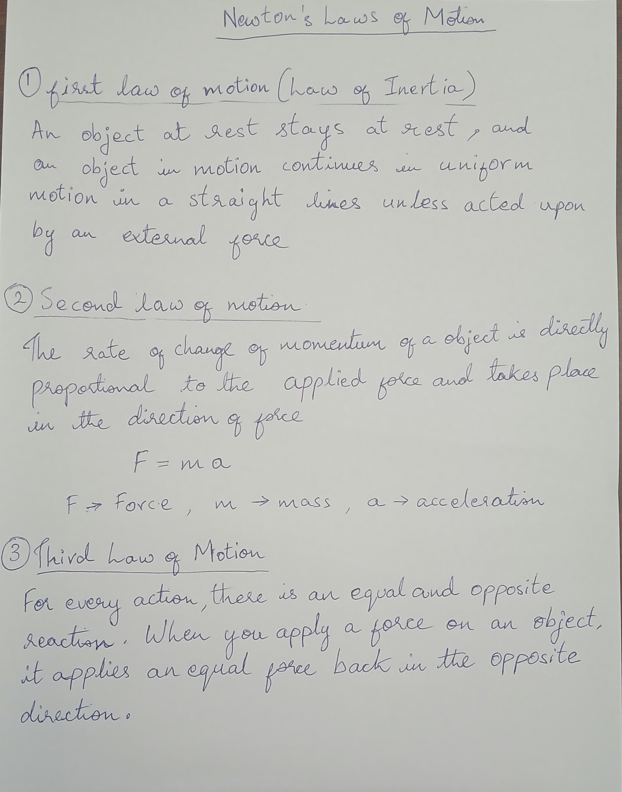
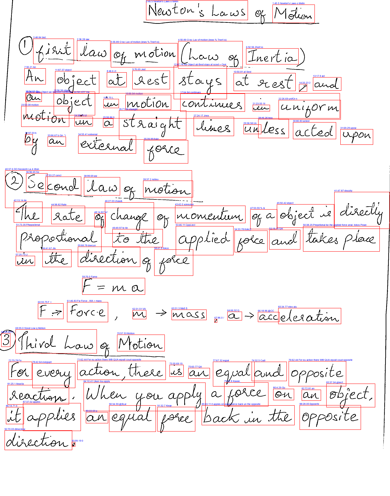
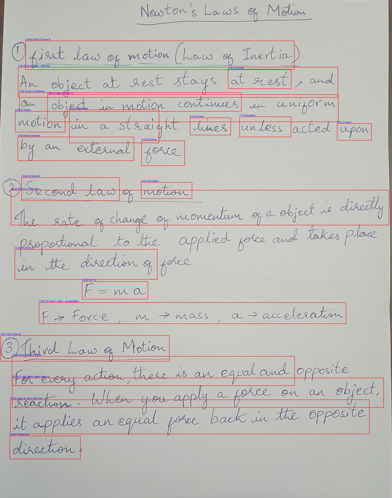

Character Error Rate & Word Error Rate pulled directly from your evaluations.
Line comparison showing perfectly how closely your deterministic pipeline tracks original teacher grading!
Stacked execution time from Preprocessing up through final LLM evaluation.
Visual representation of the image processing flow.

Missing examples/sample4.jpg
Missing examples/sample4.jpg.preproc_debug.png
Missing examples/sample4.jpg.preproc_debug_trocr.png